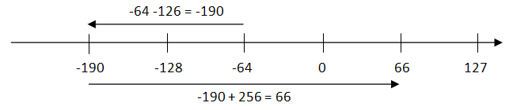
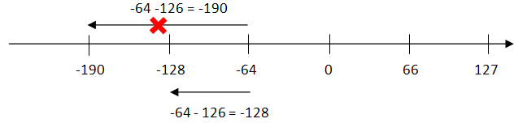

Ознакомление с основополагающими принципами технологии ММХ и ее реализацией в современных микропроцессорах, типами данных и командами ММХ-расширения процессора, особенностями арифметики с насыщением и циклической арифметики.
Выполнение лабораторной работы основано на изучении теоретических вопросов и выполнении демонстрационно-тестовых заданий с помощью информационно-справочной системы «Введение в технологию MMX», разработанной корпорацией Intel.
Работа с указанной системой должна быть проведена в следующей последовательности:
1. Рассмотреть пример, иллюстрирующий принцип SIMD(тема 5)
2. Изучить типы данных (тема 6), обратив особое внимание на диапазоны их значений.
5. Изучить синтаксис команд (тема 7) и выполнить тестовый пример.
4. Изучить отличительные особенности выполнения операций по правилам циклической арифметики и арифметики с насыщением, а также особенности обработки чисел со знаком и без знака (темы 8-9). Также следует выполнить тестовые примеры.
5. Рассмотреть классификацию команд и изучить назначение групп команд:
6. В соответствии с вариантом задания изучить назначение и особенности выполнения трех заданных команд.
| Вар-т | Команда 1 | Команда 2 | Команда 3 |
|---|---|---|---|
| 1 | paddw | packsswb | movd |
| 2 | psubd | punpckhdq | movq |
| 3 | paddsb | packuswd | pcmpeqb |
| 4 | psubsw | punpcklbw | pcmpgtb |
| 5 | paddusb | pand | pcmpeqd |
| 6 | psubusw | por | pcmpgtd |
| 7 | paddbd | pandn | pmaddwd |
| 8 | psubw | pxor | pmaddwd |
| 9 | paddsb | pmulhw | pcmpeqw |
| 10 | psubsb | pmullw | pcmpgtw |
Объем и сложность данных, обрабатываемых современными компьютерами, стремительно увеличиваются. Новые средства связи, видео- и аудиоприложения выдвигают повышенные требования к производительности микропроцессора.
Технология ММХ (MultiMedia eXtension) была разработана для ускорения мультимедийных и коммуникационных программ. В ее программное окружение были введены новые команды и типы данных, что позволило создавать приложения нового уровня. Технология основана на параллельной обработке данных. При этом сохраняется полная совместимость с существующими операционными системами и программным обеспечением. По сути, технология ММХ представляет одно из самых значительных усовершенствований со времени создания процессора Intel386 (т.е. создания 32-разрядной архитектуры).
В основе ММХ лежит принцип SIMD (Single Instruction-Multiple Data - «одиночный поток команд, множественный поток данных»). Он означает, что посредством одной команды можно обработать сразу несколько единиц информации. В технологии MMX этот принцип реализован в виде выполнения арифметических и логических операций на байтах, словах, или двойных словах, упакованных в 64-разрядные регистры MMX. Например, команда PADDSB добавляет восемь знаковых чисел длиной в один байт первого операнда к восьми знаковым числам так же длиной в один байт второго операнда и сохраняет 8 результирующих байтов в первом операнде. Эффект SIMD заключается в ускорении выполнения программного обеспечения за счет параллельного выполнения одной операции над множеством элементов данных.
Следует заметить, что в памяти новые типы данных располагаются так, как это принято в архитектуре Intel, т.е. по принципу - младший байт первым.
Наибольший эффект от использования ММХ-технологии может быть достигнут в алгоритмах, имеющих следующие характеристики:
Технология ММХ поддерживает новую арифметику, называемую арифметикой с насыщением (Saturation arithmetic), в противовес традиционной - арифметике с циклическим переносом (Wraparound arithmetic).

Рис. 1. Арифметика с циклическим переносом

Рис. 2. Арифметика с насыщением
Команды MMX используют восемь 64-разрядных регистров. Для обеспечения полной совместимости с существующим стандартным программным обеспечением регистры ММХ отображаются на регистры FPU. Прямой доступ к ним осуществляется по именам MM0, ..., MM7. Только MMX-команды могут обращаться к этим регистрам. Физически регистры MMX размещены в мантиссах регистров с плавающей запятой (биты 0-63). Таким образом, любое записываемое в MMX-регистр значение попадает в один из регистров с плавающей запятой. При выполнении MMX-команд все биты порядка и знаковый бит в соответствующем регистре с плавающей запятой (разряды 64-79) заполняются единицами.
Таблица 5.1 - Влияние ММХ-команд на контекст FPU
| Тип команды | Регистр тегов | Поле порядка и знаковый бит р-ра MMn (79...64) |
Поле мантиссы р-ра MMn (63...00) |
|---|---|---|---|
| Чтение из ММХ-регистра | Все поля 00 | Не изменяется | Не изменяется |
| Запись в ММХ-регистр | Все поля 00 | Заполняется единицами | Перезаписывается |
| EMMS | Все поля 11 | Не изменяется | Не изменяется |
После выполнения любой ММХ-команды (кроме EMMS) значения всех полей регистра тегов устанавливаются в 00. Команда EMMS устанавливает значения всех полей регистра тегов в 11. Значение регистра тегов не оказывает никакого влияния на ММХ-регистры или выполнение ММХ-команд.
Отчет по лабораторной работе должен содержать: цель работы, описание основных принципов и элементов (типы данных, синтаксис команд) технологии MMX, назначение отдельных групп команд, результаты выполнения тестовых заданий тем 7 и 9, описание трех заданных команд, выводы по работе.